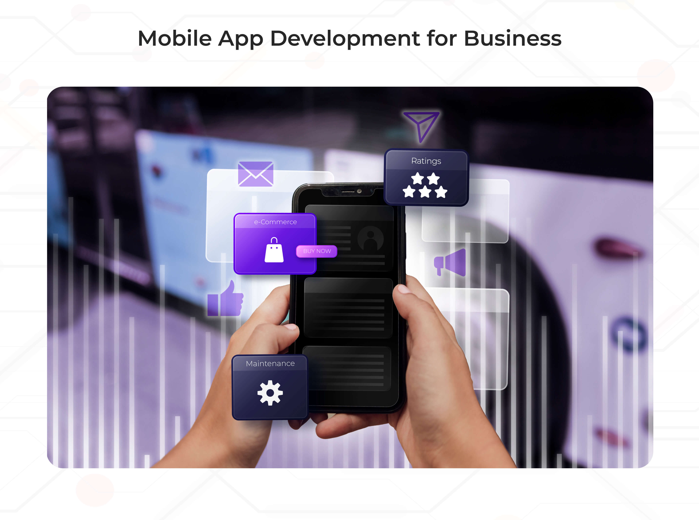
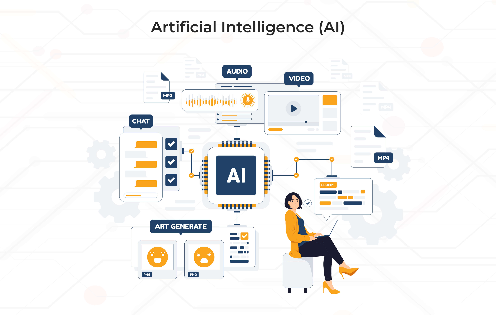
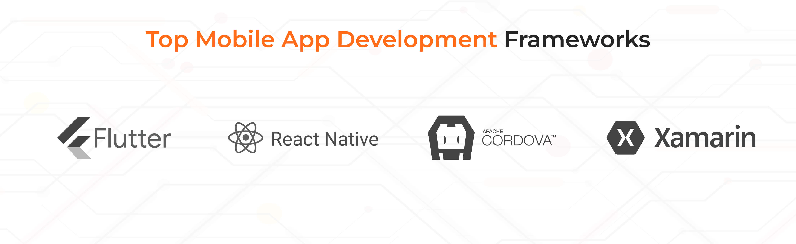
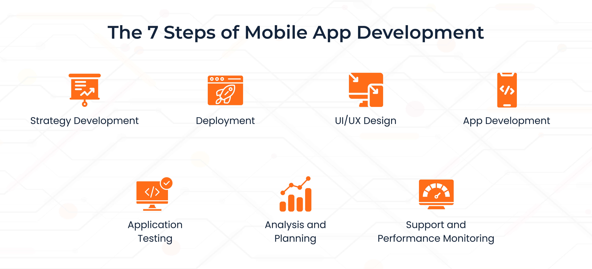

Users…Users…Users…
Users, user interface, user experience, and UI/UX are common words in the talking town. These terms are frequently used in discussions about apps. I'm confident that an additional explanation about UI/UX isn't necessary. However, if you require more information, feel free to click the link to explore further. It is time to give some credit to the UI/UX systems and understand how they are essential in the development sphere, especially for the mobile applications. So, you really want to know how UI/UX influences mobile app development for business. Let’s see

The UI and UX just means what your user interacts with on your app’s frontend and how easy it is for them to use your app. Therefore, the significance of mobile app design in its development cannot be understated. The effective incorporation of both UI and UX results in a seamless and interactive app with a simplified interface which in turn cultivates a broader and more dedicated customer base for the business. UX and UI are totally different areas in the field of mobile app designing even if they require similar knowledge base and skill set.
Users desire effortless app navigation with minimal touches (UX). The UX designer is dedicated to ensuring the app performs seamlessly across all mobile devices and platforms, while the UI designer is committed to crafting a captivating interface that simplifies user interaction. When the expertise of both the UI and UX designers is combined the resulting mobile app development for business solutions becomes not only intuitive but also captivating and compelling for the end users.
Now that you understand how UI and UX ties into mobile app development for businesses it is high time to reveal the massive advantages of tailored and proficient UI/UX design, as well as to determine why your business app needs one.
Why is it beneficial to focus on UI/UX in Mobile App Development for Business?
It can also be pointed out that the aspects of UI/UX are the most vital steps in the whole process of mobile app development for business. From this, it is clear that both UI and UX are related functions, and thus they need to complement each other for the best results. Software development companies such as Sparkout also highlight the fact that UX/UX should not be considered as two different things but rather as interconnected concepts.
Organizations identify competitors and audiences/ user profiles during the concept development to establish the best user experiences. This process assists in the identification of overall issues and potential opportunities within existing products to enhance the navigation of the app’s flow. By identifying the intent, needs, and wants of the customers more usage will be made when those needs are met through the employment of the mobile application.
When launching a new app, relying solely on app download marketing is not sufficient. You should make user interface and user experience a priority to make sure that you get long term success when approaching mobile app development for business. This requires ongoing updates to adapt to changing consumer behavior and preferences.
A mobile app is a great tool that businesses use for brand communications in the digital era with a focus on UI/UX design. If you look at any successful app you can see that they convey a brand mission and values a very effective way. For example, in the case of a ride sharing app it should prioritize functionality and ease of use in its UI/UX. This helps you to create greater loyalty and trust with your customers. Apps designed with UX that reflect the brand's unique selling proposition tend to cultivate strong customer loyalty and trust.
In today's competitive market, having apps that are faster and more efficient provides a significant advantage. You can improve your app’s performance to a great extent by improving its user interface and user experience design. Ensuring that tasks can be completed quickly is essential for user satisfaction. By incorporating faster technology and optimizing navigational flow, app speed and overall efficiency can be greatly enhanced.
User testing remains as one of the significant steps that falls under the process of UX since it assists the developers in identifying the potential of a mobile application and more importantly, its potential errors from real users. Such feedback becomes a foundational basis for UX in mobile app development for business.
Though this may prove to be time-consuming it has been established that the benefits accrued from user testing outweigh the challenges by far and a very long time. Companies realize significant cost and time advantages due to the guarantee of the market’s release of only high-quality products. Moreover, user testing is the key to maintaining brands’ credibility and satisfying consumers’ need for quality and dependability.
Unleash the latest mobile app trends for you business
A The business of developing mobile apps is dynamic and has been growing for a while now. Based on the trends identified earlier, it can be pointed out that technological progress, buyers’ needs, and other factors directly affect mobile apps. This cannot be the only reason, but undoubtedly, being informed on the trends is one of the main aspects of attaining success. The market shows that mobile app resellers require embracing new trends that would enable them to address their clients appropriately. The same goes for the content creators and producers who are eager to go even further with the building of their brands in the field of mobile app development for business.
Internet of Things (IoT) is not a new concept but with the rise in mobile usage across various industries it has created numerous opportunities. People are now accustomed to using technology to enhance their daily lives. IoT means the expanding network of internet connected devices that offer convenience and automated control to users. Smart home technology is a prime example of the increasing impact of IoT and mobile app development. Mobile apps now allow users to remotely adjust the thermostat in their homes and lock or unlock their front doors and connect to home security systems.
In the past decade mobile phones have transitioned to touch screens with minimal or no physical buttons. Recently foldable smartphones like the Samsung Galaxy Fold, OnePlus Open and VIVO Fold 3 Pro have gained popularity. When it comes to mobile app development for business app developers need to ensure their apps seamlessly adapt to foldable devices' changing display sizes.
You can say that 5G technology is a big factor in defining what app trends we see moving forward. In 2021 there were roughly 3.5 times more 5G connections than in 2020, and these connections are expected to nearly triple again between 2022 and 2024. We anticipated 5G to bring about a 10 times decrease in latency, boost in network efficiency and traffic capacity and be up to 100 times faster than 4G.
This will significantly enhance the functionality of mobile apps empowering developers to integrate new features without negatively impacting app performance. Its really important that developers and mobile app resellers make use of the speed of 5G networks during the testing and development stages of building their app.
Wearable technology has been on the rise for years and is changing the way mobile apps we develop these applications. Apple's announcement at WWDC 2019 about wearables and app integration marks a significant development. By 2024 we will probably see more mobile apps being designed with wearables in mind which will offer users the ability to download apps directly from their wrists.
You might have noticed that AI & ML are gaining more and more popularity in mobile app development for business. However this is just the beginning and we have more to explore with the technologies we have coming out every day. When we think of AI, we often first consider virtual assistants like Siri or Alexa but it has many other applications in app development. Using AI in your business applications for use cases such as summarizing, detecting patterns, etc.,can help your reduce the time taken to carry out your business processes.

If you're planning to add AI features into your mobile apps here are some good ideas for you:
- Image recognition
- Face detection
- Text and image classification
- Sentiment recognition and classification
- Speech recognition
- Predictive maintenance
You can already see that AI is making apps more intelligent and improving their performance. From backend to frontend user experience AI is poised to change the way you build apps in 2024.
Beacon technology, widely adopted in retail, healthcare, and hospitality, enhances mobile app functionality. Developed in 2013, it enables push notifications for sales and tracks buyer behavior. The technology's primary benefit is proximity marketing, and its market is expected to reach $56.6 billion by 2026, growing at a rate of 59.8% annually according to Statista.
The methods of making payments through mobile devices are also changing. Mobile payment methods that involve debit/credit cards like apple pay, google pay, and Samsung pay are on the rise. A recent report shows $6.1 billion in mobile wallet transactions in 2019, expected to hit $13.98 billion by 2023. Smartphone users are increasingly embracing mobile payments and using app features for payments on wearable devices. Therefore, integrating mobile wallets into apps should become a standard in the future for mobile app development for business.
We've been familiar with chatbots for over a decade. The first interactions with these bots were on AOL Instant Messenger in the late 1990s. They have advanced significantly and gained popularity on websites, becoming the new standard for customer service. While millions of apps exist, only a small fraction utilize chatbots, but this is expected to change by 2024. As chatbots are powered by AI, their responses are becoming more human-like, contributing to the growth of the global chatbot market at 24% per year. It's anticipated that 25% of all customer service tech interactions will be facilitated by virtual assistants in 2020. To this effect, chatbots have to enter into the mobile application development market.
The Latest Cutting-Edge Mobile App Development Technologies
Mobile app development for business includes working with tools, frameworks, and libraries used for creating applications for devices like smartphones, laptops, tablets, and smartwatches. Android and iOS are the dominant platforms. Consider device limitations when developing mobile apps.
The limitations include user interaction, device computing power, screen size, unique features, platform (Android or iOS), and potential use on multiple platforms.
It's important to decide whether to develop for one or multiple platforms. Each of the platforms has its significant characteristics alongside its opportunities and drawbacks. The application should harness mobile development technology's full potential while remaining user-friendly, secure, scalable, and accessible to a wide audience. Without careful consideration, an application may not meet audience expectations, leading to poor sales and user experience, and failure to achieve business goals.
Most Popular Mobile App Development Languages
Swift is Apple’s programming language for creating apps on iOS, macOS, tvOS, and watchOS. It works with Cocoa and Cocoa Touch frameworks, allowing you to build native and web apps.
One of the main benefits of Swift is that it requires significantly less code to achieve similar results. Additionally, Swift incorporates modern features such as generics and closures, which streamline and optimize the coding process. According to the PYPL Index on Statistics Time, Swift has captured a valuable market share of 2.17% among various programming languages used for mobile app development for business.
Java is a versatile programming language that is concurrent, class-based, and object-oriented. It is specifically designed to have minimal implementation dependencies.
With Java, developers can write code once and run it anywhere, which means the code can run on different platforms without needing to be recompiled. Java applications are typically compiled to bytecode (class files) that can run on any Java virtual machine (JVM) regardless of the computer architecture. According to W3Techs, Java is used as the server-side programming language for 4.8% of all websites.
Python is a versatile programming language suitable for web development, data analysis, and machine learning. It is a dynamic and easily readable language, offering extensive functionality while maintaining readability and development speed. Due to these qualities, Python is an excellent choice for building mobile apps. It has been utilized to create apps for various platforms including Android, iOS, and Windows Phone. Although Python is primarily used for back-end and web app development, app developers can use it to build fully functional mobile apps. If you want to develop an outstanding application to enhance your business's productivity, consider hiring app developers from well-established app development firms.
The development world calls PHP as a server-side scripting language. You can create dynamic web pages easily using it. It is very popular for developing mobile apps and websites, as well as for system administration, desktop development, gaming, and more. Despite launching in 1995, PHP has continually evolved to implement new features and improve performance till today. Today, over 9 million domains worldwide run on PHP, making it one of the top choices for writing websites or applications.
Top Mobile App Development Frameworks

If you are a React Native fan you may find Flutter interesting. Flutter is Google’s mobile UI framework, designed to enable developers to build apps for both iOS and Android using a single codebase. It is a great alternative to the traditional Android SDK and iOS SDK in mobile app development for business, as it allows you to write once and deploy to both platforms with ease. Flutter is gaining popularity in cross-platform mobile development and offers impressive capabilities. It uses Google’s Dart programming language, which is easy to learn and highly performant. According to Google, more than 500,000 developers use Flutter every month.
Facebook launched React Native to help developers use a single codebase to build mobile apps for both Android and iOS devices without rewriting the code in multiple code editors or frameworks. It's gaining popularity for addressing issues with hybrid app development tools. With React Native, developers can quickly build robust native apps using their JavaScript skills, thanks to its low learning curve.
Cordova dating back to 2010 was originally for creating hybrid mobile apps using HTML5/CSS/JavaScript. It now serves as a platform for developing apps for multiple platforms without requiring code rewrites. According to Statista, Cordova had a 16% market share among cross-platform frameworks in 2021. It allows using JavaScript, CSS and HTML while providing access to native APIs. Plugins are available for features like user authentication and barcode scanning. Despite other frameworks covering more ground, Cordova remains a great option for mobile app development for business.
Xamarin is a framework for cross platform software development. It is a useful framework that allows you to easily create applications with native performance for iOS, Android and Windows devices from a single codebase. With Xamarin, developers can write in C#, use open-source libraries, and share code across different mobile devices. You can build high quality apps that work across different platforms. All this without needing a separate mobile development team for device platform. What's more Xamarin is backed by Microsoft. Another interesting fact related to Xamarin is that more than 14,000 apps have already been built using Xamarin and downloaded over 2 billion times worldwide by mobile app users.
Are your mobile apps not converting customers? Book a call with our consultant today.
The Ultimate Enterprise Mobile Application Development Strategy
An enterprise mobility strategy has the potential to revolutionize your business or organization. If the thought of developing an enterprise app seems overwhelming don't hesitate to seek advice from our experts at Sparkout Tech.
Mobile technology has the power to optimize workforce productivity and elevate the customer experience simultaneously. Businesses that embrace technology solutions and invest in enterprise software will gain a competitive edge.
The primary users of an enterprise app are the employees of the business, and the app's primary function is to streamline business processes. When you develop enterprise mobile applications for business uses it's very important that you prioritize consistency, security and scalability.
Enterprise apps hold immense potential to transform your business. However it's important to carefully consider essential points before diving into mobile app development for business. If you're unsure where to start with mobile app development for your business our experts at Sparkout Tech can guide you in refining your ideas and developing a high-quality enterprise app.
The 7 Steps of Mobile App Development
The development process of a mobile application may exhibit some degree of variation based on individual requirements. Nevertheless, there are typically seven essential steps that necessitate completion.

The initial phase of mobile app development is strategy formulation, which can be broken down into four key steps: identifying objectives and competitors, selecting the platform, and choosing a monetization method.
When you are building an app start by identifying its main objectives and researching your major competitors. Decide on the platform you'll be using and choose the right monetization method if you are building a consumer application. This could include in app advertising, in app purchases, subscriptions, affiliate marketing or paid apps.
The second step you need to do with mobile app development for business is conducting a thorough analysis and planning of your project and use cases. We can divide this step further into three parts - functional and nonfunctional requirements, product roadmap and choosing the right technology stack.
First, specify the actions for your mobile app, document them in the functional requirements, and consider non-functional requirements. Define your app’s roadmap, prioritize features for the Minimum Viable Product (MVP), and identify the technology stack needed for your mobile project.
You can give your users an amazing experience with a well designed app. Creating an app that appeals to users requires a significant investment in the design process. The UI/UX design should prioritize intuitiveness, user friendliness, engagement and a seamless user experience.
You’re ready to start your mobile app development for business
I understand that starting out with mobile app development for business can be very challenging. I hope that after reading through the blog you now have a good understanding of how you can use UI/UX to your advantage when you're building a mobile app. If you want to build your own mobile app with experienced professionals who know the ins and outs of the business book a call with our consultant today.
Chief Design Officer
Hi, I'm Lokesh Murali. CDO - Chief Design Officer, responsible for all design and innovative aspects of a company's products and services. Collaboration is the key - direction, and recommendations on the design and development execution we collaborate as one. From designing, and ideating wireframes, to fabricating prototypes, and checking customer feedback, involving myself in the creative sector keeps my vibe for the era!